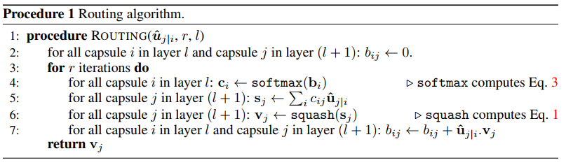

Intro
本文记录了阅读《Dynamic Routing Between Capsules》的理解与收获，若有错误欢迎email(wjy.f@qq.com)指出。转载请注明出处。
为了对文章有个大概的认识，先来介绍模型的结构，再来谈其他玄学问题。
Main
CapsNet
结构
下图是论文中所采用的神经网络结构：

可以看到，image首先由conv1(num_kernel=256, kernel_size=9, stride=1) + ReLU提取特征，得到256个20×20的feature map。然后再用conv2(num_kernel=8, kernel_size=9, stride=2)，得到一个PrimaryCaps(6×6*8)。这里有个疑问，32个PrimaryCaps用的是同一个conv吗？
于是，每个PrimaryCaps里面有6×6个8D capsule，第二层共有32×6×6个8D capsule。
公式
- $u_i(i \in [6*6*32])$： 表示PrimaryCaps的某个8D的Capsule
- $\hat{u}_{j|i}$： 论文中称之为低一层的capsules的“prediction vectors”
- $b_{ij}$： 初始化为0，更新方法是 $b_{ij} \leftarrow b_{ij} + \hat{u}_{j|i} \cdot v_j$。 其中，$a_{ij} = \hat{u}_{j|i} \cdot v_j$ 表示 $capsule_j$ 的输出 $v_j$ 跟 $capsule_i$ 的prediction vector的agreement（相似度）。值越大，表示两个向量的方向越相似，两个向量所表示的性质越相近。由$c_{ij}$的公式知，$b_{ij}$ 的值越大（也就是两个向量的方向越相似），$capsule_i$ 越倾向于将信息传送给 $capsule_j$ 。
- $c_{ij}$： 由动态路由算法更新的coupling coefficients，并且$\sum_{i}c_{ij} = 1$
- $s_j$： $capsule_j$ 的所有input之和。
- $squashing()$： 非线性函数，保留了向量的方向，使长的向量越长，短的向量越短，并且长度都压缩在1之内
- $v_j$： $capsule_j$ 的output。在文章中应该就是指最后的输出DigitCaps，共有10个（因为有10个数字，即10类）Capsule。每个capsule有16维，每一维都代表着数字的某些属性（粗细、倾斜程度等等）。向量的长度代表了当前输入是类k的概率。
一张图表示他们之间的关系：

Margin loss

-
k： class k
-
$m^+=0.9, m^-=0.1$
-
$\lambda$ ：
The λ down-weighting of the loss for absent digit classes stops the initial learning from shrinking the lengths of the activity vectors of all the digit capsules. We use λ = 0.5.
-
如果输入的数字图像是class k，那么$T_k=1$
-
示例 输入 $\|v_k\|$ $L_k$ TT 数字k 比较大 比较小 TF 数字k 比较小 比较大 FT 非数字k 比较大 比较大 FF 非数字k 比较小 比较小 -
可以看出，在假阳性和假阴性的示例中，loss的值比较大。
算法流程
下面看公式和Procedure1应该能明白它是怎么一个处理过程了。

其中，若 i 指某一个capsule ，那么 j 就是这个capsule的parent capsule。对下面的公式来说也是一样。
玄学
论文仅仅介绍了capsule初步简单的实现，让大家知道capsule是有效的。而其核心思想
论文有两个比较突出的创新点：
- 采用 routing-by-agreement mechainsm 决定两层capsule之间的连接以及参数$c_{ij}$的更新方式
- 用向量输出替代标量输出
这里写背景（为什么要这么构造模型，背后的神经科学知识)
存疑
- 32个PrimaryCaps用的是同一个conv吗？